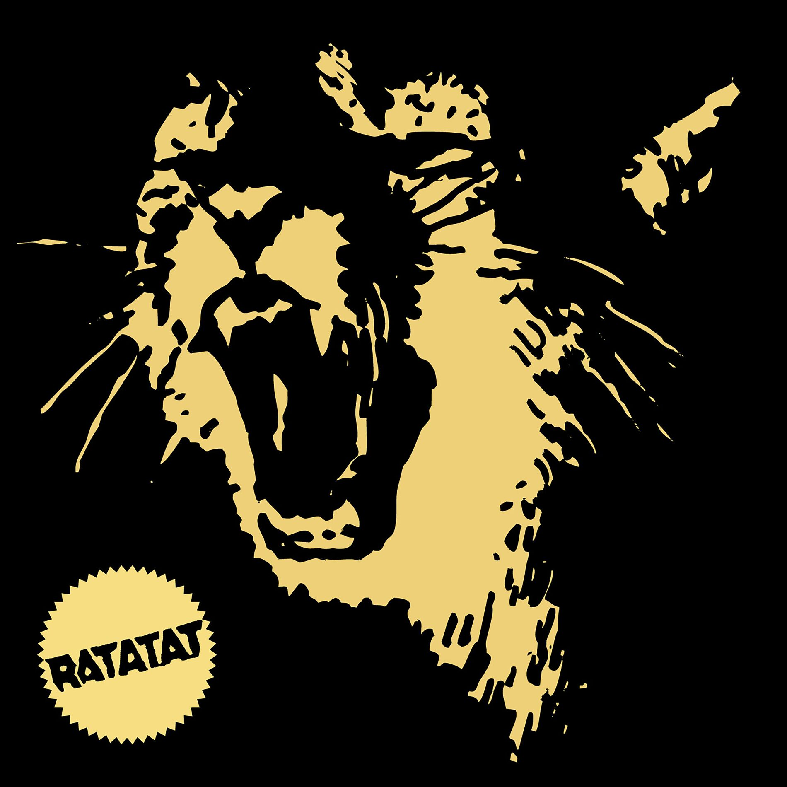
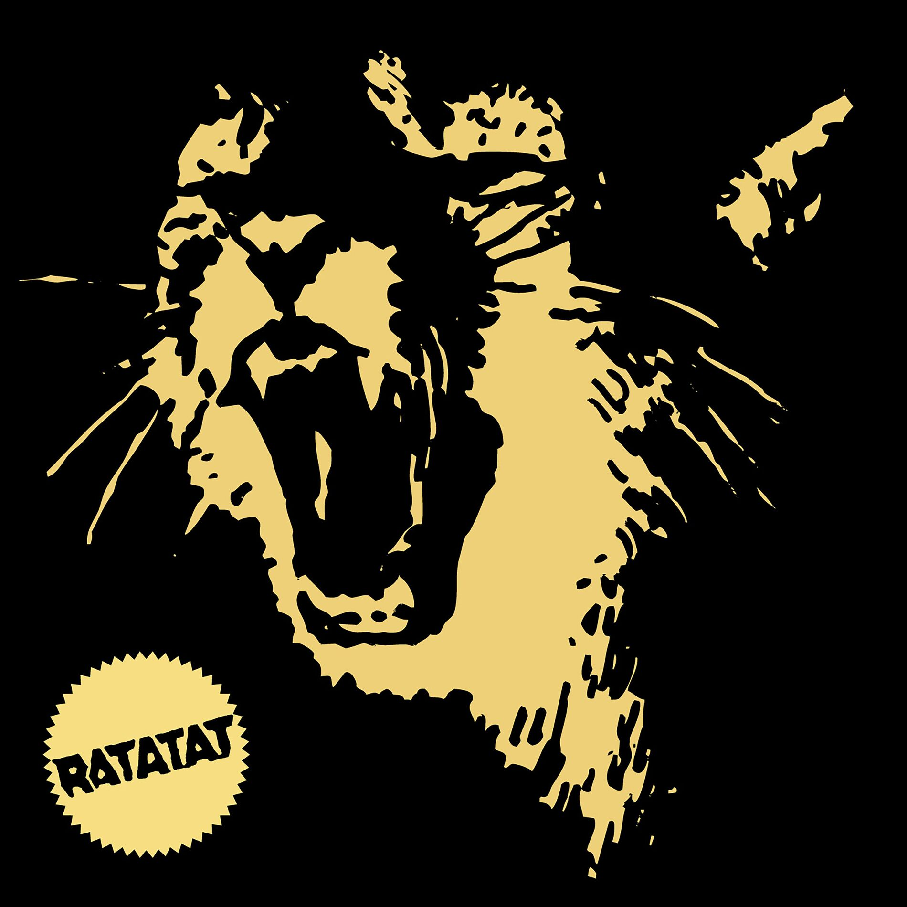

"Like the band itself, Classics sounds like it was designed to serve something-- a movie or a video game or a Power Point presentation."
- Pitchfork, Novembre 2006
Avec Classics, Ratatat signe un deuxième album audacieux et hypnotique, où les guitares saturées
rencontrent des beats électroniques d'une précision chirurgicale. Le duo new-yorkais parvient à
créer une atmosphère unique, à la fois rétro et futuriste, sans jamais recourir à la voix
humaine. Chaque morceau est un voyage instrumental, oscillant entre énergie brute et mélancolie
subtile.
Des titres comme "Wildcat" ou "Tropicana" captivent par leur inventivité sonore et leur richesse
rythmique. Bien que l’album puisse sembler répétitif à la première écoute, c’est justement dans
cette répétition que Ratatat tisse une identité sonore cohérente et immersive.
En somme, Classics est une œuvre singulière qui confirme le talent du duo pour transformer des
riffs de guitare simples en véritables hymnes électroniques. Un classique du genre.
| Date de sortie | 22 Août 2006 |
|---|---|
| Date d'enregistrement | Novembre 2003 - Mars 2006 |
| Longueur | 42:31 |
| Genre | Indie Rock - Electronica - Neo-psychedelia |
| Label | XL |
Composition :
Paroles :
Originalité :
Diversité :
Overall :